Создание игр в Roblox Studio
Денежная система Roblox. Часть 2
Это занятие завершает 8 модуль курса и в нем мы завершим работу над денежной системой, начатой в прошлом занятии, и добавим интерфейс для магазина.
Также мы рассмотрим, как с программной точки зрения реализуется магазин и добавление предметов в инвентарь игроков.
Программирование управления интерфейсом
Подготовка к работе
Прежде чем начинать работу с магазином, исправим поведение противника, добавленного в прошлом занятии. Для этого найдите противника в окне Explorer, раскройте его группу и откройте скрипт Script.
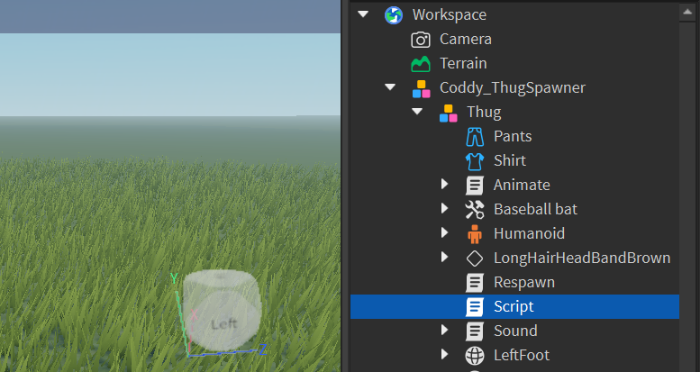Измените значение переменной Distance с 10000 на 100. Это ограничит радиус работы противника, после чего он будет обнаруживать игрока только в радиусе 100 юнитов. Перенесите противника подальше от спаунпоинта, чтобы он не мешал во время тестирования интерфейса.
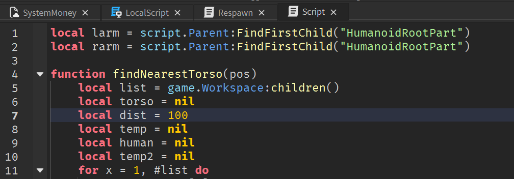Измените значение стартового количества денег у игрока на 2000 или больше, изменив параметр Value переменной Cash из предыдущего занятия.
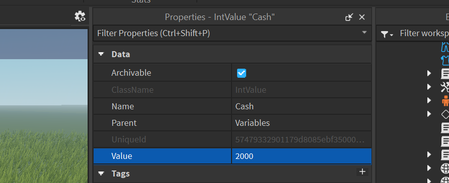Последний этап подготовки - добавление специального объекта, в котором содержится интерфейс и скрипты, необходимые для этого занятия. В тулбоксе найдите модель Coddy_ShopUI.
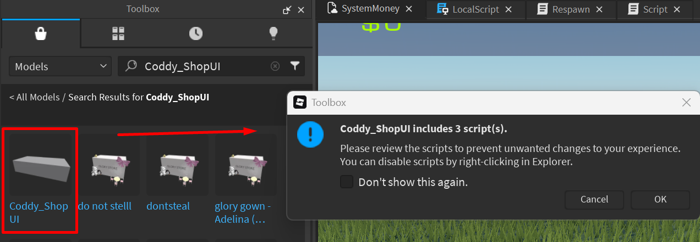Добавьте ее на сцену и раскройте ее дочерние объекты в окне Explorer. Внутри находится папка Powerups, которую необходимо перенести в ReplicatedStorage:
Также внутри находится интерфейс Shop_UI. Перенесите его в папку StarterGui и сделайте дочерним к объекту ScreenGui.
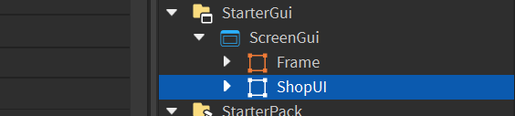Это интерфейс, подготовленный для работы в этом занятии. Теперь можно приступать к написанию скриптов и программированию магазина.
Кнопка закрытия интерфейса
Первый скрипт, который мы создадим, будет закрывать окно по нажатию на крестик в правом верхнем углу интерфейса:
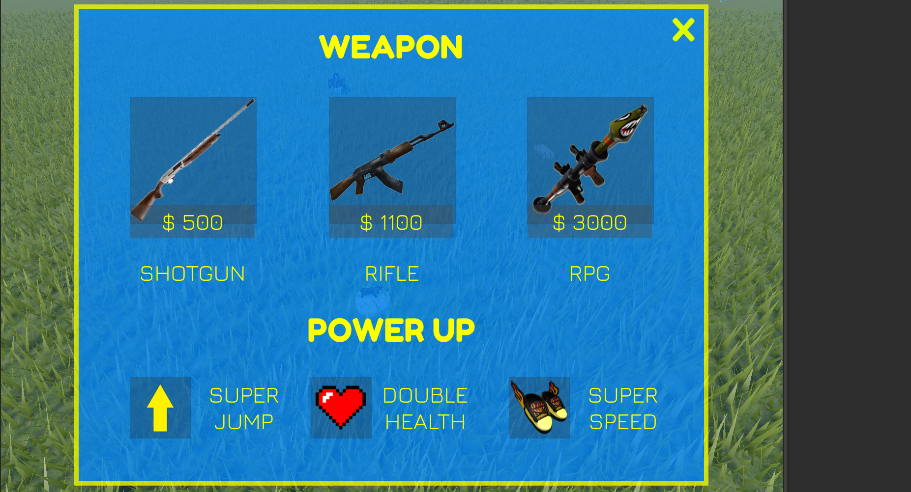Выберите объект Shop_UI в окне Explorer и откройте его дочерние объекты. Shop_UI - это Frame, на котором находятся остальные объекты интерфейса.
Так как это главный объект в иерархии, если выключить его видимость (параметр Visible), все дочерние объекты также скроются. Именно это и должен сделать скрипт, который мы создадим - по нажатию на кнопку он должен изменить значение параметра Visible на false.
Создайте дочерний LocalScript для кнопки CloseButton:
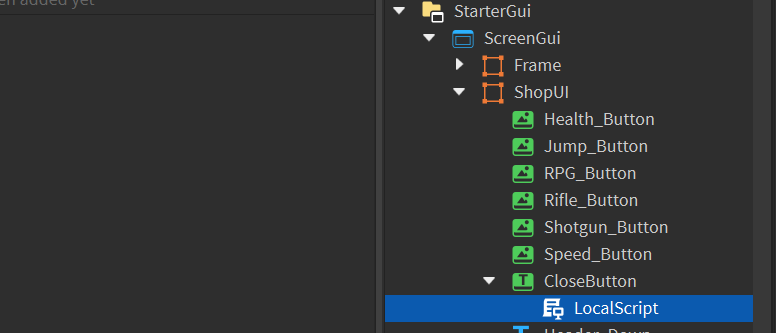Добавим переменную frame, в которой будет храниться ссылка на объект Shop_UI. Также добавим переменную button для ссылки на саму кнопку.
Так как во время игры этот интерфейс будет храниться не в папке StarterGui, а перейдёт в папку локального игрока, ссылки на все объекты интерфейса лучше делать относительными, используя параметр Parent.
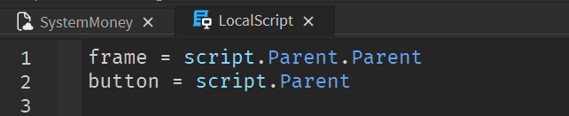Добавим функцию, которая будет вызываться при нажатии на клавишу. Также добавим событие, обрабатывающее нажатие левой клавиши мыши по кнопке (MouseButton1Down) и подключим к ней функцию:
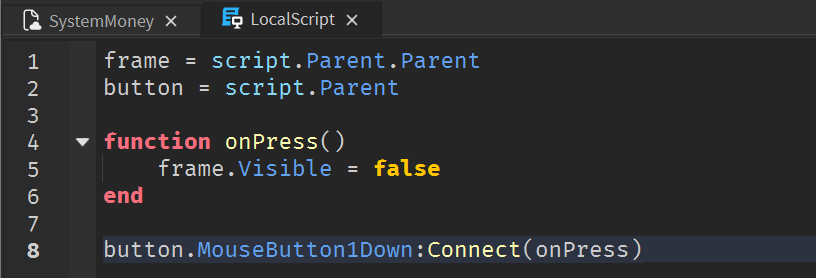Кнопка открытия и закрытия магазина
Теперь добавим кнопку открытия/закрытия магазина с аналогичным функционалом в верхний фрейм интерфейса, созданный на прошлом занятии. Выберите объект Frame, создайте в нем TextButton и добавьте к нему локальный скрипт:
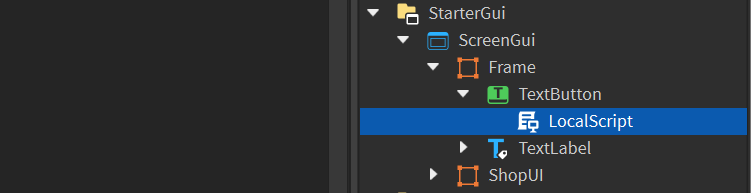Этот скрипт должен открывать интерфейс магазина, если он скрыт и закрывать, если он открыт. Добавим ссылки на фрейм магазина (Shop_UI) и кнопку:
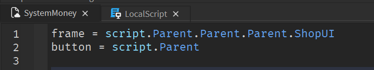Напишем функцию onPress(). Функция должна проверять значение параметра Visible интерфейса магазина и изменять его на противоположный:
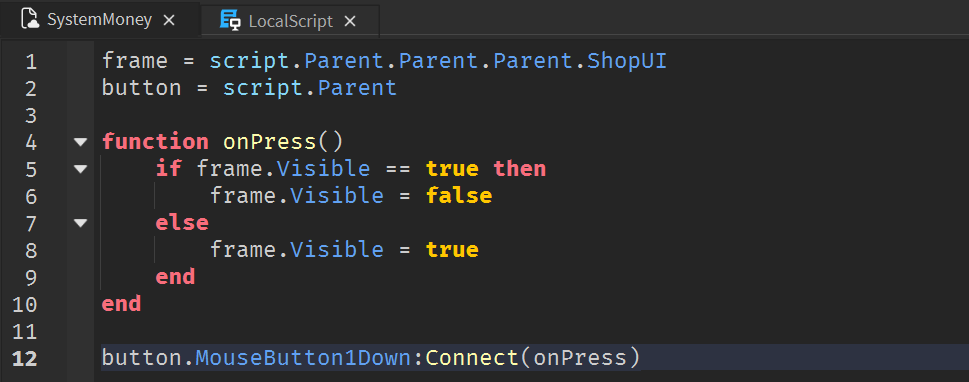Настройте внешний вид кнопки и проверьте ее работоспособность в игре:
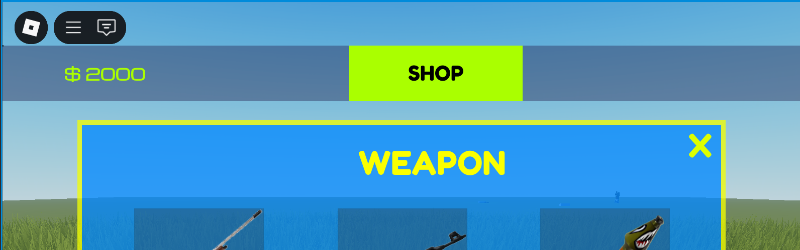Скрипты покупки
Следующие два скрипта, которые мы добавим - скрипты покупки. Они копируют хранящиеся в ReplicatedStorage объекты и добавляют их в инвентарь или скрипты игрока. Сперва добавим скрипт для покупки усилителя прыжка.
Покупка усилителя прыжка
Усилители персонажей - это скрипты, добавляющиеся к скриптам игрока и изменяющие характеристики персонажа при помощи параметров компонента Humanoid. Эти скрипты уже готовы и находятся в папке Powerups, которую вы перенесли в ReplicatedStorage в начале занятия.
Добавим скрипт, клонирующий скрипт усиления прыжка и добавляющий его локальному игроку. Добавьте локальный скрипт к кнопке Jump_Button:
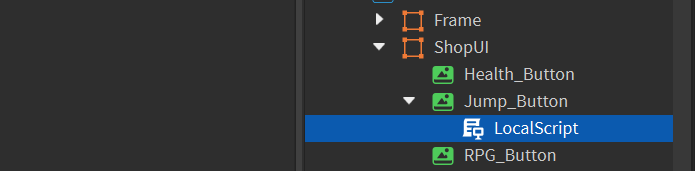Добавим переменные со ссылками на локального игрока, количество его денег и саму кнопку:
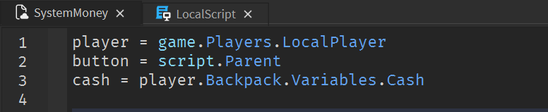Все действия, производящиеся скриптом, должны быть доступны только при условии, что у игрока есть достаточное количество денег, то есть значение параметра Value переменной Cash должно быть больше стоимости товара.
Добавим функцию и условия:
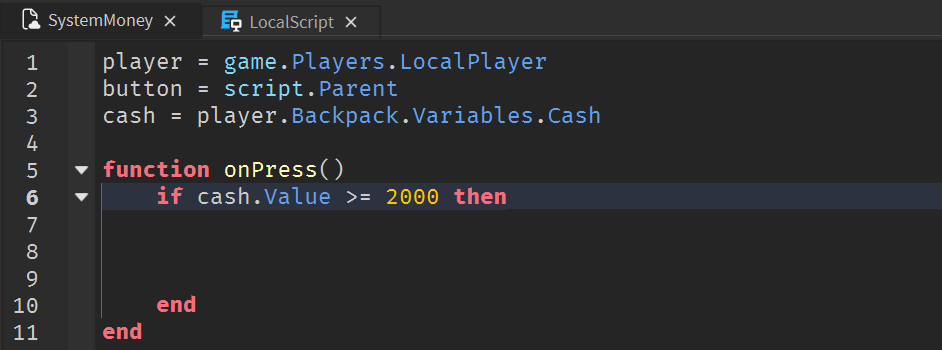Если у игрока достаточное количество денег, скрипт должен создать копию (клон) скрипта Super_Speed_PS из папки Powerups и перенести ее в скрипты локального игрока (сделать папку PlayerScripts родительской для клона). Запишем эти действия в функцию:
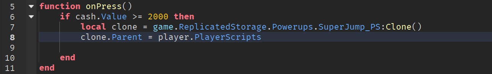Добавим уменьшение денег игрока и вызов функции по событию:
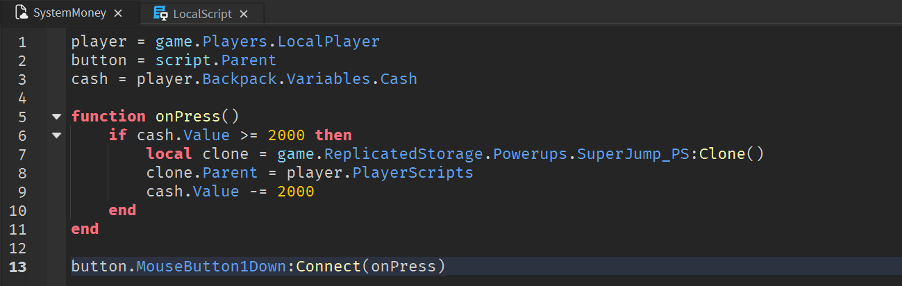Запустите игру и попробуйте купить это усиление. Если все сделано верно, ваш персонаж будет прыгать в 2 раза выше.
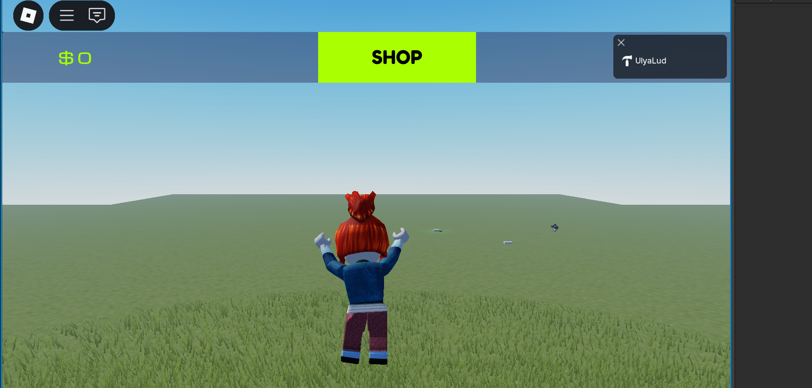Скрипт продажи оружия
Скрипт продажи оружия работает схожим образом, клонируя объект из ReplicatedStorage и добавляя его в рюкзак игрока.
Создадим скрипт покупки дробовика. Для этого, в первую очередь, нужно найти подходящий дробовик в тулбоксе и добавить его в ReplicatedStorage.
В тулбоксе введите в поиске Shotgun, и добавьте в сцену дробовик. Будьте внимательны - на вопрос Roblox "Добавить ли выбранное оружие в StarterPack" выберите No:
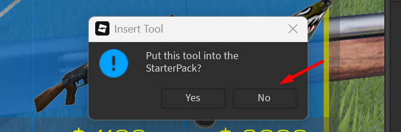Создайте дополнительную папку в ReplicatedStorage и назовите Weapons. Перетащите дробовик из объектов сцены в эту папку. Теперь он хранится на сервере и будет доступен для клонирования.
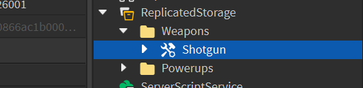В интерфейсе магазина найдите кнопку Shotgun_Button и добавьте к ней дочерний локальный скрипт. Он должен выполнять аналогичные с предыдущим скриптом действия, за исключением путей к объектам.
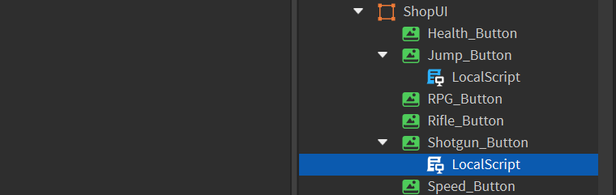Напишите этот скрипт:
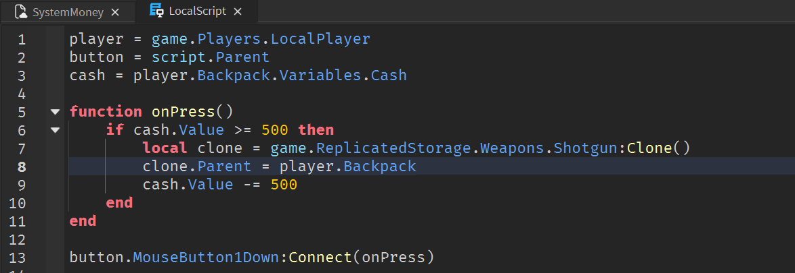Запустите игру и попробуйте купить дробовик.
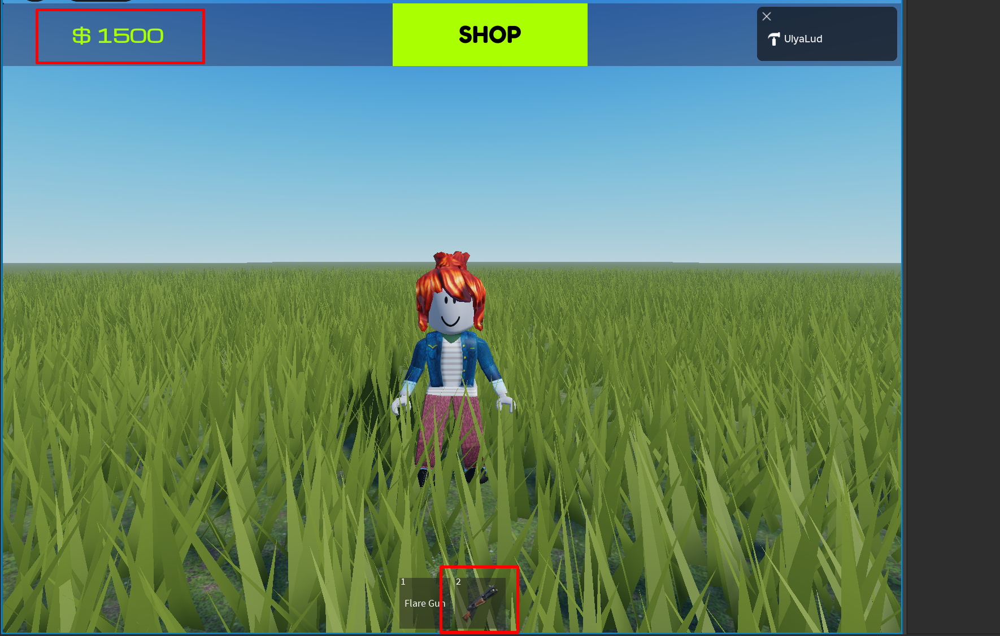Далее вам необходимо самостоятельно дописать недостающие скрипты для покупки двух оставшихся усилителей и оружия.
Домашкаа 😁
Данное занятие завершает 8-ой модуль курса. Необходимо ответить на вопросы для закрепления изученного материала.
-
Что такое левел-дизайн?
- Создание моделей, и оформление локаций уровня
- Проработка сложности и баланса уровня
- Работа с механикой передвижения и игровых ситуаций
-
Как называется главная локация уровня для шутера?
- Арена
- Мид
- Центр
-
Что такое вертикальный геймплей?
- Локация со множеством высоких зданий
- Локация, арена которой находится выше остального уровня
- Локация, в которой игроки двигаются на разной высоте
-
Сколько маршрутов может быть в уровне?
- 2 - основной и боковой
- 3 - основной и два фланга
- Больше 3 - основной, фланги и проходы между локациями
-
Как правильно соблюдать масштаб объектов в сцене?
- Выставить персонажа на сцене для контроля пропорций
- Запускать игру и тестировать масштабы в игре
- Пользоваться текстуры масштабной сетки
- Все варианты верны
-
Где хранятся объекты, продающиеся в магазине?
- ServerStorage
- ReplicatedStorage
- ReplicatedFirst
-
Как называется событие нажатия на кнопку интерфейса?
- MouseButton1Down
- MouseDown1Click
- MouseButton1Click
-
Что происходит, когда игрок покупает объект в магазине?
- Объект клонируется и добавляется в инвентарь игрока
- Объект переносится из ReplicatedStorage в инвентарь игрока
- Сервер посылает команду создания объекта рядом с игроком
-
Где хранится интерфейс магазина?
- В папке StarterPlayerScripts
- В папке StarterGui
- В папке ServerGui